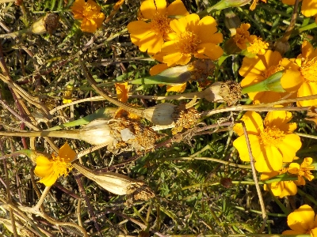
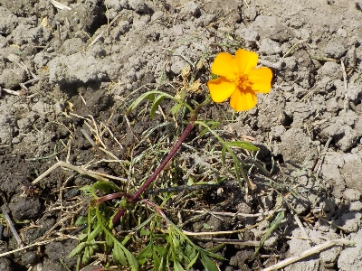

来年の種蒔き用にマリーゴールド（グランドコントロール）のタネを採取しました。
更新日 : 2025/12/20

12月でもまだ花が咲いていますね。タネも出来ているので採取しました。
タネが沢山あるのでこぼれタネが育ちそうな気がします。でも以前に何もしなかったらマリーゴールドが全滅したことがあったので、ちゃんとタネを採りました。
このタネが親と同じ品種になるかは分かりませんが、きっと似たようなものになるんじゃないかな。
更新日 : 2025/12/20

12月でもまだ花が咲いていますね。タネも出来ているので採取しました。
タネが沢山あるのでこぼれタネが育ちそうな気がします。でも以前に何もしなかったらマリーゴールドが全滅したことがあったので、ちゃんとタネを採りました。
このタネが親と同じ品種になるかは分かりませんが、きっと似たようなものになるんじゃないかな。
更新日 : 2025/12/20

畑のあちこちでマリゴールドが発芽してて、もう花がさいているものがありました。
今日は耕すのに邪魔なマリーゴールドを、畑の隅っこに移動させました。
今年は種蒔きしないでも十分に苗がありそうです。
来年も再来年もマリーゴールドを植え続けたい。